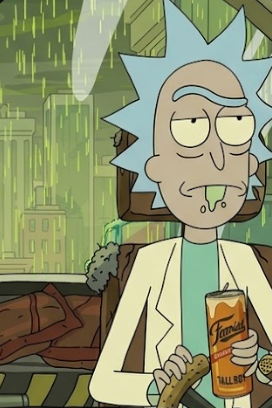
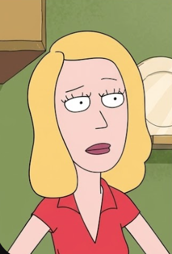
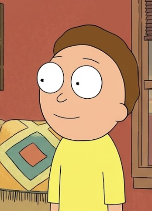
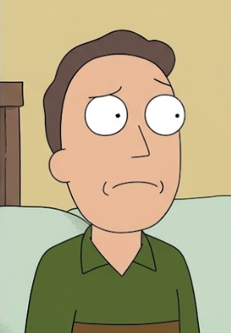
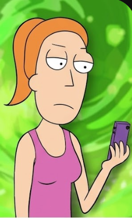
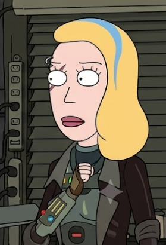

Rick Sanchez
Morty's grandfather and the smartest man in the multiverse.
Invents gadgets, portals, spaceships, and takes Morty on dangerous adventures.

Morty's grandfather and the smartest man in the multiverse.
Invents gadgets, portals, spaceships, and takes Morty on dangerous adventures.

Rick's daughter and Morty's mother.
Works as a horse surgeon (equine veterinarian) and deals with family issues.

Rick's grandson.
Travels with Rick, often acting as the moral compass while trying to survive their adventures.

Morty's father.
Often insecure and clumsy, but genuinely cares about his family.

Morty's older sister.
Joins adventures more often as the series progresses and becomes tougher and more confident.

A clone or possibly the original Beth.
Travels space as a rebel fighting the Galactic Federation. Nobody knows which Beth is the clone.
